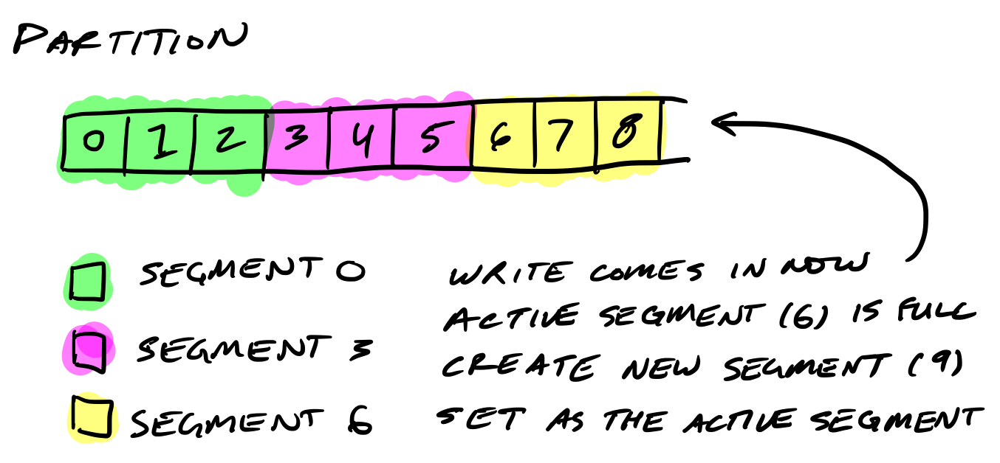
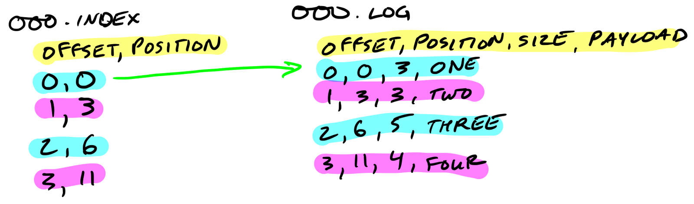
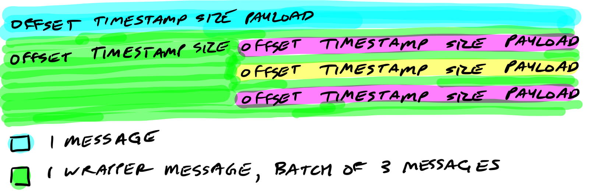

翻译自 Kafka/Confluent 公司的工程师 Travis Jeffery 的文章: How Kafka’s Storage Internals Work。
通过本文我会帮助你理解Kafka是如何存储它的数据的。
对于调优Kafka的性能以及了解broker配置实际是干什么的， 了解Kafka的存储很有用。 我受Kafka的简单性的启发， 用我所学开始实现一个Go的Kafka: jocko。
Kafka 的存储单元是分区
分区(partition)是有序的， 新的不可变的消息增加到尾部。一个分区不能扩多个boker，甚至不能跨多个磁盘。

保留策略管理kakfa如何保留消息
你可以指定保留多少数据和多久的数据(大小和时间策略)， 之后kakfa会按照顺序清理数据， 不管数据是否已经倍消费。
分区被分割成多个分段
所以Kafka会定期地查找磁盘中需要清理的消息。如果一个分区单一的文件比较打， 操作会很慢，而且容易出错。为了解决这个问题(和其它问题)， 分区文件被分割成几个分段(segment)。
当Kafka往分区中写数据时， 它实际是往分段文件中写的。如果这个分段文件达到文件大小的限制，一个新的分段文件会被创建，以后往这个分区上写的数据会写入到这个新的分段文件中。
分段文件使用它们的基偏移量(base offset)作为文件名。 一个分段文件的基偏移量 要大于前一个分段中的偏移量， 小于或者等于本分段文件中的偏移量。

在磁盘中， 每个分区一个文件夹， 包含分段文件， 分段文件由索引文件和log文件两个文件组成。
|
|
分段日志文件存储消息
每个消息包含它的值，偏移量，时间戳，key,消息大小、编解码器器、checksum 以及消息的版本。
磁盘上的数据格式和broker从producer接收到网络消息时一样的， 也和发送给consumer的消息格式一样。这种设计的好处时可以使用零拷贝进行数据传输。
|
|
分段索引文件记录消息在日志文件中的位置(偏移量)
分段索引文件记录消息在日志文件中的位置(偏移量)。

索引文件映射到内存中。偏移量的查找使用二分查找， 找到最接近偏移量的位置(小于或者等于目标偏移量)。
索引文件是由8字节的entry组成。4个字节存储相相对偏移量， 4个字节存储位置。相对偏移量加上基偏移量才是实际偏移量，这样只用4个字节久可以了。 例如，假设基偏移量是10000000000000000000，之后的偏移量10000000000000000001、10000000000000000002只需用1、2来表示即可。
Kafka保持压缩的消息
Producer发送的一批消息会呗压缩在一起，作为一个消息的payload发送给broker。和前面的介绍一样，数据保持原样压缩存在磁盘上。

回顾
Now you know how Kafka storage internals work:
现在， 你应该了解了Kafka是如何存储日志(消息)的：
- 分区时存储的基本单元
- 分区文件被分割成分段文件
- 分段文件包含两个文件：索引文件和日志
- 索引文件记录消息在日志文件中的位置，用来快速查询消息
- 索引文件中存在的是相对偏移值
- 压缩的批量消息保持不变存储
- 磁盘上的文件和收发的消息时一样的
实现Go语言的kafak
我正在用Go实现Kafka。 目前我已经实现了在单个broker上读写分段，正在实现分布式。欢迎贡献。